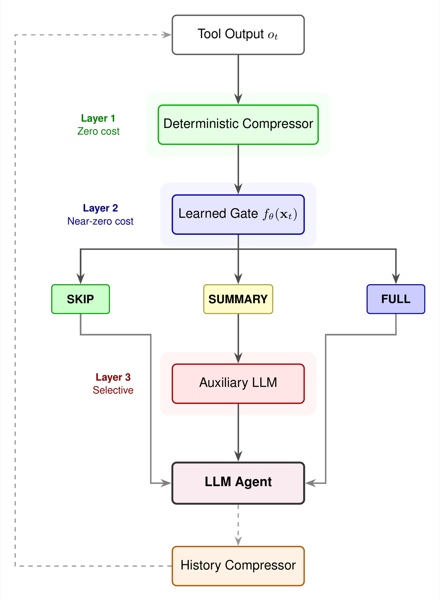
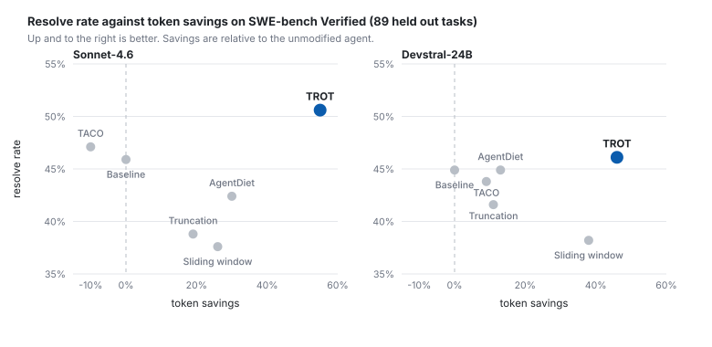

TROT:
Triage of observation tokens for efficient LLM agents
TL;DR
Coding agents drown in their own observations: file views, test logs and tool output pile up in the context, and what mattered at step 5 is often dead weight by step 25. Compressing every observation with an extra LLM saves tokens but adds dozens of calls and sometimes throws away the one detail the agent needed.
TROT triages each observation in order of cost: free deterministic rules first, then a tiny learned gate, and an auxiliary LLM only for the ambiguous remainder, while a history compressor removes stale content from the context.
On SWE-bench Verified it is the only method that improves both resolve rate and cost: 50.6% resolved with 55% fewer tokens on Sonnet 4.6, and 46.1% with 46% fewer on Devstral 24B, using 6× fewer auxiliary LLM calls than uniform reflection.
Resolve
Does compressing the context hurt the agent?
SWE-bench Verified, 89 held out tasks, Sonnet 4.6
50.6%resolved, up from 45.9% for the unmodified agent
Save
How much context can be dropped?
Total tokens, agent and auxiliary calls combined
55%fewer tokens than the unmodified agent
Spend
What does each solved task cost?
Total tokens divided by resolved tasks
−59%tokens per resolution on Sonnet 4.6
Most agents follow the ReAct loop[1]: reason, act, and receive the full tool output at every step. Over a long task the context fills with observations, which make up most of the tokens an agent consumes[2, 3]. A file read that informed an early edit still occupies context long after its value has expired, and re-reading an unchanged file pays again for nothing new.
A recent approach, uniform LLM reflection, asks an auxiliary model to compress every observation above a size threshold[3]. It does save tokens, but it adds roughly one auxiliary call per observation, and the summariser occasionally removes the error detail or diagnostic line that the agent later needs.
The idea: most decisions need no reasoning
Many compression decisions can be made from the surface of an observation. Edit confirmations always re-display the file just written. Submission output is identical boilerplate. A file read twice with no edit in between contains the same content. In 100 baseline trajectories, these deterministic patterns account for 49.3% of all observation tokens.
| Waste category | Share of observation tokens | Handled by |
|---|---|---|
| Stale file re-reads | 15.8% | History deduplication |
| Submission boilerplate | 14.8% | Delivery time rule |
| Edit confirmation re-display | 10.8% | Delivery time rule |
| Repeated long output | 6.9% | History deduplication |
| Passing test detail | 0.9% | Delivery time rule |
| Total deterministic | 49.3% | Zero cost |
Table 1. Where observation tokens are wasted, from 100 baseline trajectories.
Method

Layer 1
Deterministic rules, at zero cost
Rules either protect content that must never be compressed, such as error traces and the first output of a command, or compress known waste with pattern matching. The rules were discovered offline from completed trajectories and checked with weak supervision.
Layer 2
A learned gate, at near zero cost
For the rest, a small classifier per tool type predicts the fidelity an observation deserves (skip, summary or full) from 50 features of the trajectory state, such as whether the file is edited later. It is trained on 152,287 observations from SWE-smith trajectories[4] with labels taken from hindsight: what the agent actually did next. No human annotation or reinforcement learning is needed.
Layer 3
Selective LLM reflection
Only observations that are still large after gating go to an auxiliary LLM, about 5 calls per task against 30 for uniform reflection. Separately, a history compressor replaces stale re-reads and superseded content in the accumulated context before every model call.
Baselines and setup
Agents run in a SWE-agent style loop[5] on 89 tasks from SWE-bench Verified[6], none of which was used for rule discovery, training or tuning, with a 50 step budget. Two models are tested: Sonnet 4.6 and the open Devstral 24B. Baselines are the unmodified agent; TACO, which evolves compression rules[7]; AgentDiet, which reflects on every observation over 500 tokens[3]; truncation, which keeps the head and the error tail; and a sliding window that masks old observations[2].
Experiments
Experiment 1
Can an agent see less and solve more?

| Method | Sonnet 4.6 resolve | Sonnet 4.6 savings | Devstral 24B resolve | Devstral 24B savings |
|---|---|---|---|---|
| Unmodified agent | 45.9% | 44.9% | ||
| TACO | 47.1% | −10% | 43.8% | +9% |
| AgentDiet | 42.4% | +30% | 44.9% | +13% |
| Truncation | 38.8% | +19% | 41.6% | +11% |
| Sliding window | 37.6% | +26% | 38.2% | +38% |
| TROT | 50.6% | +55% | 46.1% | +46% |
Table 2. Main results. Savings are 1 minus method tokens over baseline tokens; negative means more tokens than the baseline.
Every other method trades one goal for the other. AgentDiet saves tokens but lowers resolve on Sonnet; TACO raises resolve but spends 10% more tokens; the sliding window saves aggressively but costs 7 to 8 points. Showing the agent less improves resolution, which is consistent with two effects: a shorter context is easier to keep track of, and blocking redundant re-reads pushes the agent to try something new. Agents with TROT re-read files 4.2 times on average, against 6.8 in failed baseline runs.
| Method | Sonnet 4.6 | Devstral 24B |
|---|---|---|
| TROT | 571K (−59%) | 758K (−48%) |
| AgentDiet | 1,073K | 1,268K |
| Sliding window | 1,271K | 1,055K |
| TACO | 1,514K | 1,352K |
| Unmodified agent | 1,410K | 1,449K |
Table 3. Tokens per resolved task (lower is better).
Experiment 2
Which parts carry the gain?
| Variant (Devstral 24B) | Resolve | Savings |
|---|---|---|
| TROT, 50 steps | 46.1% | +46% |
| TROT, 75 steps | 53.9% | +27% |
| Without critical bypass | 38.2% | +44% |
| Without learned gate | 34.8% | +44% |
| Without history compressor | 28.1% | +4% |
Table 4. Extended budget and component ablations. Each ablation removes one component from the 50 step system.
The history compressor matters most: without it, stale observations accumulate, resolve falls 18 points and the savings almost disappear. Removing the gate or the critical bypass also costs 8 to 11 points. Among failed runs, 17 of 47 hit the 50 step limit while still making progress, well below the context limit, so the step budget rather than context length is the binding constraint. With 75 steps, TROT reaches 53.9%, nine points above the unmodified agent.
Experiment 3
How safe is the learned gate?
| Tool | Accuracy | Under served | Over served | Token savings |
|---|---|---|---|---|
| Read | 85.4% | 4.0% | 10.6% | 59.5% |
| Bash | 92.6% | 1.3% | 6.1% | 44.0% |
| Test | 90.4% | 4.5% | 5.2% | 83.9% |
Table 5. Gate accuracy per tool. Under service, serving an observation at too low a fidelity, is the risk that matters.
Information loss is rare: at most 4.5% of observations are served at too low a fidelity, and mistakes fall between adjacent tiers, so the gate degrades gracefully. Test output compresses best, since most of a passing test log reduces to a one line summary.
Citation
Please cite this post as
Paul Trust. “TROT: Triage of observation tokens for efficient LLM agents.” June 2026. https://paultrust26.github.io/paultrust/blog/trot.html
or in BibTeX
@misc{trust2026trotblog,
title = {{TROT: Triage of observation tokens for efficient LLM agents}},
author = {Trust, Paul},
year = {2026},
month = jun,
howpublished = {\url{https://paultrust26.github.io/paultrust/blog/trot.html}},
note = {Blog post}
}References
- ReAct: Synergizing Reasoning and Acting in Language Models[PDF]Yao, S., Zhao, J., Yu, D., Du, N., Shafran, I., Narasimhan, K. and Cao, Y., 2023. International Conference on Learning Representations (ICLR).
- The Complexity Trap: Simple Observation Masking Is as Efficient as LLM Summarization for Agent Context Management[PDF]Lindenbauer, T., Slinko, I., Felder, L., Bogomolov, E. and Zharov, Y., 2025. Deep Learning for Code Workshop (DL4C) at NeurIPS.
- Reducing Cost of LLM Agents with Trajectory Reduction[PDF]Xiao, Y.A., Gao, P., Peng, C. and Xiong, Y., 2026. Proceedings of the ACM on Software Engineering, 3 (FSE), pp. 1241 to 1263.
- SWE-smith: Scaling Data for Software Engineering Agents[PDF]Yang, J., Lieret, K., Jimenez, C., Wettig, A., Khandpur, K., Zhang, Y., Hui, B., Press, O., Schmidt, L. and Yang, D., 2025. Advances in Neural Information Processing Systems (NeurIPS).
- SWE-agent: Agent-Computer Interfaces Enable Automated Software Engineering[PDF]Yang, J., Jimenez, C.E., Wettig, A., Lieret, K., Yao, S., Narasimhan, K. and Press, O., 2024. Advances in Neural Information Processing Systems (NeurIPS).
- SWE-bench: Can Language Models Resolve Real-world GitHub Issues?[PDF]Jimenez, C.E., Yang, J., Wettig, A., Yao, S., Pei, K., Press, O. and Narasimhan, K., 2024. International Conference on Learning Representations (ICLR).
- A Self-Evolving Framework for Efficient Terminal Agents via Observational Context Compression[PDF]Ren, J., Wu, S., Li, Y., Zhu, K., Xu, S., Feng, B., Yuan, R., Zhang, W., Batista-Navarro, R., Yang, J. and Lin, C., 2026. arXiv preprint arXiv:2604.19572.